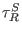
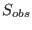
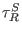
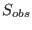
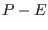

Next: The buoyancy equation Up: The mean flow model Previous: The temperature equation Contents
INTERFACE:
subroutine salinity(nlev,dt,cnpar,nus,gams)DESCRIPTION:
This subroutine computes the balance of salinity in the form
Horizontal advection is optionally
included (see obs.nml) by means of prescribed
horizontal gradients
 and
and
 and
calculated horizontal mean velocities
and
calculated horizontal mean velocities  and
and  .
Relaxation with the time scale 
towards a precribed (changing in time)
profile  is possible.
.
Relaxation with the time scale 
towards a precribed (changing in time)
profile  is possible.
Inner sources or sinks are not considered. The surface freshwater flux is given by means of the precipitation - evaporation data read in as  through the airsea.nml namelist:
USES:
use meanflow, only: avmols use meanflow, only: h,u,v,w,S,avh use observations, only: dsdx,dsdy,s_adv use observations, only: w_adv_discr,w_adv_method use observations, only: sprof,SRelaxTau use airsea, only: precip,evap use util, only: Dirichlet,Neumann use util, only: oneSided,zeroDivergence IMPLICIT NONEINPUT PARAMETERS:
number of vertical layers
integer, intent(in) :: nlev
time step (s)
REALTYPE, intent(in) :: dt
numerical "implicitness" parameter
REALTYPE, intent(in) :: cnpar
diffusivity of salinity (m^2/s)
REALTYPE, intent(in) :: nus(0:nlev)
non-local salinity flux (psu m/s)
REALTYPE, intent(in) :: gams(0:nlev)
REVISION HISTORY:
Original author(s): Hans Burchard & Karsten Bolding
Karsten Bolding 2012-12-28